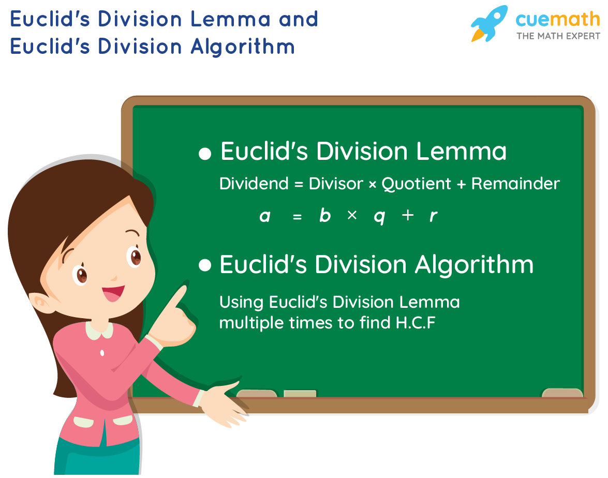
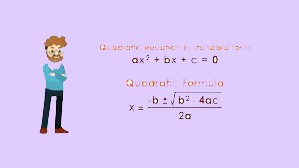
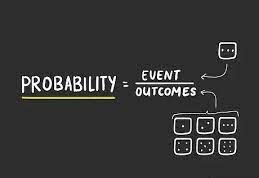

| REAL NUMBERS |
|---|
| The Fundamental Theorem of Arithmetic, on the other hand, has to do somethingwith multiplication of positive integers. You already know that every composite numbercan be expressed as a product of primes in a unique way—this important fact is theFundamental Theorem of Arithmetic. Again, while it is a result that is easy to state andunderstand, it has some very deep and significant applications in the field of mathematics.We use the Fundamental Theorem of Arithmetic for two main applications. First, weuse it to prove the irrationality of many of the numbers you studied in Class IX, such as2 , 3 and 5. Second, we apply this theorem to explore when exactly the decimalexpansion of a rational number, say (0)pqq≠, is terminating and when it is non-terminating repeating. We do so by looking at the prime factorisation of the denominatorq of pq. You will see that the prime factorisation of q will completely reveal the natureof the decimal expansion of pq.So let us begin our exploration |
| Euclid’s Division Lemma |
|  |
| Given positive integers a and b,there exist unique integers q and r satisfying a = bq + r,0 ≤ r < b.This result was perhaps known for a long time, but was first recorded in Book VIIof Euclid’s Elements. Euclid’s division algorithm is based on this lemma.Euclid’s division algorithm is a technique to compute the Highest Common Factor(HCF) of two given positive integers. Recall that the HCF of two positive integers aand b is the largest positive integer d that divides both a and b.Let us see how the algorithm works, through an example first. Suppose we needto find the HCF of the integers 455 and 42. We start with the larger integer, that is,455. Then we use Euclid’s lemma to get455 =42 × 10 + 35Now consider the divisor 42 and the remainder 35, and apply the division lemmato get42 =35 × 1 + 7Now consider the divisor 35 and the remainder 7, and apply the division lemmato get35 =7 × 5 + 0Notice that the remainder has become zero, and we cannot proceed any further.We claim that the HCF of 455 and 42 is the divisor at this stage, i.e., 7. You can easilyverify this by listing all the factors of 455 and 42. Why does this method work? Itworks because of the following result. |
| Example :Use Euclid’s algorithm to find the HCF of 4052 and 12576. Solution :Step 1 :Since 12576 > 4052, we apply the division lemma to 12576 and 4052, to get12576 =4052 × 3 + 420 Step 2 :Since the remainder 420 ≠ 0, we apply the division lemma to 4052 and 420, to get 4052 =420 × 9 + 272 Step 3 :We consider the new divisor 420 and the new remainder 272, and apply thedivision lemma to get420 =272 × 1 + 148 We consider the new divisor 272 and the new remainder 148, and apply the divisionlemma to get272 =148 × 1 + 124 We consider the new divisor 148 and the new remainder 124, and apply the divisionlemma to get148 =124 × 1 + 24 We consider the new divisor 124 and the new remainder 24, and apply the divisionlemma to get124 =24 × 5 + 4 We consider the new divisor 24 and the new remainder 4, and apply the divisionlemma to get24 =4 × 6 + 0 The remainder has now become zero, so our procedure stops. Since the divisor at thisstage is 4, the HCF of 12576 and 4052 is 4. Notice that 4 = HCF (24, 4) = HCF (124, 24) = HCF (148, 124) =HCF (272, 148) = HCF (420, 272) = HCF (4052, 420) = HCF (12576, 4052). Euclid’s division algorithm is not only useful for calculating the HCF of verylarge numbers, but also because it is one of the earliest examples of an algorithm thata computer had been programmed to carry out. |
| QUADRATIC EQUATIONS |
|---|
| Sridharacharya (C.E. 1025) derived a formula, now known as the quadratic formula,(as quoted by Bhaskara II) for solving a quadratic equation by the method of completingthe square. An Arab mathematician Al-Khwarizmi (about C.E. 800) also studiedquadratic equations of different types. Abraham bar Hiyya Ha-Nasi, in his book‘Liber embadorum’ published in Europe in C.E. 1145 gave complete solutions ofdifferent quadratic equations.In this chapter, you will study quadratic equations, and various ways of findingtheir roots. You will also see some applications of quadratic equations in daily lifesituations |
|  |
| Solving Quadratic Equations Using Factorisation |
| Consider the quadratic equation 2x2 – 3x + 1 = 0. If we replace x by 1 on theLHS of this equation, we get (2 × 12) – (3 × 1) + 1 = 0 = RHS of the equation.We say that 1 is a root of the quadratic equation 2x2 – 3x + 1 = 0. This also means that1 is a zero of the quadratic polynomial 2x2 – 3x + 1.In general, a real number α is called a root of the quadratic equationax2 + bx + c = 0, a≠ 0 if aα2 + bα + c = 0. We also say that x =ααααα is a solution ofthe quadratic equation, or that ααααα satisfies the quadratic equation. Note that thezeroes of the quadratic polynomial ax2 + bx + c and the roots of the quadraticequation ax2 + bx + c = 0 are the same.You have observed, in Chapter 2, that a quadratic polynomial can have at mosttwo zeroes. So, any quadratic equation can have atmost two roots.You have learnt in Class IX, how to factorise quadratic polynomials by splittingtheir middle terms. We shall use this knowledge for finding the roots of a quadraticequation. Let us see how. |
| Example :Find the roots of the quadratic equation 6x2 – x – 2 = 0. Solution :We have6x2 – x – 2 =6x2 + 3x – 4x – 2=3x (2x + 1) – 2 (2x + 1)=(3x – 2)(2x + 1) The roots of 6x2 – x – 2 = 0 are the values of x for which (3x – 2)(2x + 1) = 0 Therefore, 3x – 2 = 0 or 2x + 1 = 0,i.e.,x =23orx = 12− Therefore, the roots of 6x2 – x – 2 = 0 are 21.and –32 We verify the roots, by checking that 21and32− satisfy 6x2 – x – 2 = 0. |
| PROBABILITY |
|---|
| Suppose we throw a die once. For us, a die will always mean a fair die. What are the possible outcomes?They are 1, 2, 3, 4, 5, 6. Each number has the same possibility of showing up. Sothe equally likely outcomes of throwing a die are 1, 2, 3, 4, 5 and 6.Are the outcomes of every experiment equally likely? Let us see.Suppose that a bag contains 4 red balls and 1 blue ball, and you draw a ballwithout looking into the bag. What are the outcomes? Are the outcomes — a red balland a blue ball equally likely? Since there are 4 red balls and only one blue ball, youwould agree that you are more likely to get a red ball than a blue ball. So, the outcomes(a red ball or a blue ball) are not equally likely. However, the outcome of drawing aball of any colour from the bag is equally likely. So, all experiments do not necessarilyhave equally likely outcomes. The theoretical probability (also called classical probability) of an event E,written as P(E), is defined asP(E) = (Number of outcomes favourable to E)/(Number of all possible outcomes of the experimen) |
|  |
| P(E)=(Number of outcomes favourable to E)/(Number of all possible outcomes of the experiment) |
| For example of equally likely outcomes, suppose we throw a dieonce. For us, a die will always mean a fair die. What are the possible outcomes?They are 1, 2, 3, 4, 5, 6. Each number has the same possibility of showing up. Sothe equally likely outcomes of throwing a die are 1, 2, 3, 4, 5 and 6.Are the outcomes of every experiment equally likely? Let us see.Suppose that a bag contains 4 red balls and 1 blue ball, and you draw a ballwithout looking into the bag. What are the outcomes? Are the outcomes — a red balland a blue ball equally likely? Since there are 4 red balls and only one blue ball, youwould agree that you are more likely to get a red ball than a blue ball. So, the outcomes(a red ball or a blue ball) are not equally likely. However, the outcome of drawing aball of any colour from the bag is equally likely. So, all experiments do not necessarilyhave equally likely outcomes.However, in this chapter, from now on, we will assume that all the experimentshave equally likely outcomes. |
| Example 1 :Find the probability of getting a head when a coin is tossed once. Also find the probability of getting a tail. Solution :In the experiment of tossing a coin once, the number of possible outcomesis two — Head (H) and Tail (T). Let E be the event ‘getting a head’. The number ofoutcomes favourable to E, (i.e., of getting a head) is 1. Therefore,P(E) = P (head) =Number of outcomes favourable to E Number of all possible outcomes = 12 Similarly, if F is the event ‘getting a tail’, thenP(F) =P(tail) = 12(Why ?) Example 2 :A bag contains a red ball, a blue ball and a yellow ball, all the balls beingof the same size. Kritika takes out a ball from the bag without looking into it. What isthe probability that she takes out the (i)yellow ball? (ii)red ball? (iii)blue ball? Solution :Kritika takes out a ball from the bag without looking into it. So, it is equally likely that she takes out any one of them. Let Y be the event ‘the ball taken out is yellow’, B be the event ‘the ball takenout is blue’, and R be the event ‘the ball taken out is red’.Now, the number of possible outcomes = 3.(i)The number of outcomes favourable to the event Y = 1.So,P(Y) =13Similarly,(ii)P(R) =13and(iii)P(B) = 13 |